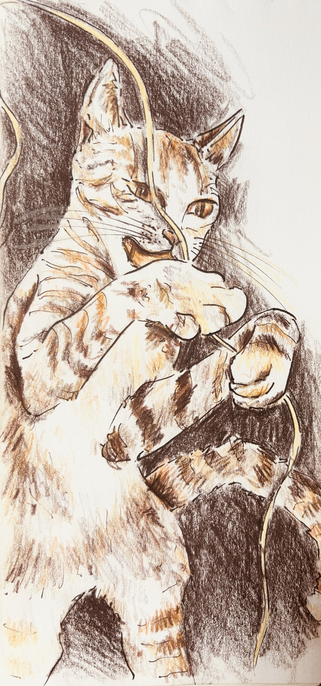

Where do you personally stand in relation to creativity?

Creativity is in my blood.
What pulls you toward it, keeps you in it, or keeps you at a distance?
It brings healing and emotional relief and can also become habit-forming. It helps drown out my sorrows and heightens my pleasures. Each day, I feel the need to produce something, whether it's a continuation of a previous work or the beginning of something new.
What is it about it that's led to its place in your life?
Creativity awakens me when an idea inspires me and calms me when I am engaged in a satisfying journey. It is something to be shared and often envied.